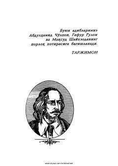

VSVilyam Shekspirning taniqli dramalari jamlangan saylanma asarlarning ikkinchi jildi.
Ushbu kitob buyuk ingliz dramaturgi Vilyam Shekspirning uch jildlik saylanma asarlarining ikkinchi jildi bo'lib, unga "Romeo va Juletta", "Otello", "Koriolan" va "Yuliy Sezar" asarlari kiritilgan. Asarlar O'zbekiston xalq shoiri Jamal Kamol tomonidan ingliz tilidan o'zbek tiliga tarjima qilingan. Nashr keng kitobxonlar ommasi va adabiyot muxlislariga mo'ljallangan.